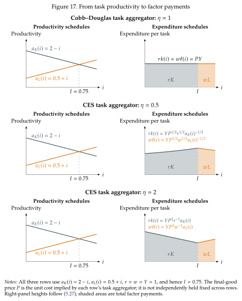

From productivity schedules to expenditure¶
Having established how inputs are distributed across tasks, we now look at how they are compensated. We examine how expenditure on each task aggregates into total payments to capital and labor. Specifically, we start by multiplying the input used in each task by its price to get the expenditure in each task:
Total compensation is the integral of task expenditure across the tasks assigned to each input. Figure 17 maps the productivity schedules on the left into these expenditure schedules on the right. Their heights depend on productivity, factor prices, output, and the final-good price \(P\), which equals unit cost. The blue area sums \(rk(i)\) over machine tasks and is therefore \(rK\); the orange area sums \(w\ell(i)\) over human tasks and is \(wL\). Dividing either area by the total area \(PY\) gives its factor share.
The same three cases govern expenditure within each input's task bundle, because every unit of that input has the same price.
Cobb--Douglas tasks: \(\eta=1\)¶
The productivity powers vanish and both expenditure schedules have height \(PY\). Equal-length intervals receive equal expenditure, exactly as Cobb--Douglas expenditure shares in Section 2 do not depend on factor-augmenting technology. Area shares therefore equal bundle lengths: \(\alpha_K=I\) and \(\alpha_L=1-I\).
Hard-to-substitute tasks: \(\eta<1\)¶
The negative productivity exponent gives higher expenditure on the less productive tasks within each bundle. Their services are costly but hard to substitute away from, so the firm spends more to support them. The \(\eta=0.5\) panels show expenditure rising toward the cutoff on the machine side and falling away from it on the worker side.
Easy-to-substitute tasks: \(\eta>1\)¶
The positive productivity exponent reverses these slopes. The firm takes advantage of productive tasks by purchasing enough extra services from them to more than offset their lower unit costs. The \(\eta=2\) panels therefore show more expenditure at the productive outer ends of the two bundles.
For \(\eta\neq1\), task lengths alone do not determine expenditure shares: the areas also depend on productivity and prices. Unlike \(\omega_K\) and \(\omega_L\), which each integrate to one, these expenditure schedules integrate to the actual payments \(rK\) and \(wL\).

Multiplying input demands by their prices gives input shares:
When \(\eta=1\) we aggregate with a Cobb-Douglas technology and optimality conditions give
Every equal-length task interval then receives the same input payment. Integrating gives the special result \(\alpha_K=I\) and \(\alpha_L=1-I\).